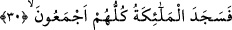

yıkandığı gibi yıkanır. Çünkü zâhire göre o da abdestsizdir. Yine zâhirî meselelerle
ilgili olarak bu dünyevî yaratılışta nâkısa tâbidir.
2- Akıl ve idrâk dünyâda olduğu hâl üzere kalır. Çünkü akıl, îman, velîlik ve
benzerleri rûhun sıfatlarındandır. Ruh ise ölümle değişime uğramaz.
3- Kâmil ruh, kendi cenâzesine katılır. Namazda insanlara örnek olur. Onun kendi
namazını kılması, hakîkat mertebesinde kâmilin hem secde eden hem de kendisine secde
edilen olduğuna işârettir. Dolayısıyla yaptığı ibâdet başkasına değil, yine O’nadır. İyi
anla! İnsanların kendisinin cenâze namazını kılması ise meleklerin Âdem (a.s.)’a secde
etmesine işârettir. Bunun için bu büyük sırrı gerçekleştirmek üzere cenâze namazı
mutlak olarak meşrû kılınmıştır. Bu namazın şerîat mertebesinde duâ ve senâ (övgü)
olması ise buna tezâd teşkil etmez. Çünkü her mertebenin (şeriat/tarîkat/hakîkat)
kendisinde karar kılındığında uyulması gereken bir sınırı vardır.
et-Te’vîlâtü’n-Necmiyye’de şöyle denilir: “Ona şekil verdiğim” ona üflememe ve
Bana izâfe edilen rûhu kabûle elverişli kılacak bir şekle soktuğum “ve ona rûhumdan
üflediğim zaman,” Allah’ın rûhu kendisine izâfe ederek şereflendirmesi, melekût-i
a‘lânın en yüce mertebesine ve Allah’a son derece yakın olma şerefine ermenin rûha
mahsûs olduğuna işâret etmektedir. Nitekim Allah: “Biz ona şahdamarından daha
yakınız.” (Kaf, 50/16) buyurmuştur. Bu izâfe yine ilâhî nefhayı kabûle elverişliliğin de
rûha mahsus olduğuna işaret etmektedir. Çünkü Ruh bu şereflendirme ile şereflenmiş ve
bu şeref diğer yaratılanlar arasında sâdece ona nasîb olmuştur.
“Siz hemen onun için secdeye kapanın.” Çünkü ruh, Hak Teâlâ’nın üflemesi ile ilâhî
yakınlık mertebelerinin en yücesinden, kalıp (beden) esfel-i sâfilînine gönderilirken
rûhânî varlıklara ve mukarreb meleklere uğradı. Onlar da nurdan yaratılmıştır. Böylece
yıldızların ışıklarının güneşin ışığında mündemiç olduğu gibi onların nurları da rûhun
sıfatlarının nûrunda mündemiç hâle gelmiştir. Ruh daha sonra cin ve şeytanların
üzerinden geçer. Onların sıfatlarının en özel olanlarını alır. Sonra hayvanların üzerinden
geçer. Onlardan da his ve kuvveleri alır. Sonra da Allah’ın kudret eliyle yaratılan,
hamuru Allah’ın lütuf ve kahrıyla yoğrulan, ilâhî tecellîleri kabûle istîdâdlı olan kalıba
taalluk edip bağlanır. İşte Allah Âdem (a.s.)’ı yaratıp onda tecellî edince, kendilerine
hitab edebilecek varlıklar olan meleklere ‘siz hemen onun için secdeye kapanın’
buyurmuştur. Bu ise Âdem (a.s.)’ın yaratılıştaki kemâlinin, ilim şerefinin ve ilâhî
tecellîlere kâbiliyetinin buna müstahak olması sebebiyledir.
30. Meleklerin hepsi de hemen secde ettiler.
Allah Teâlâ Âdem’i yarattı, ona şekil verdi ve ona ruh üflendikten sonra hiçbir yer ya
da gök meleği hâriç olmamak şartıyla “Meleklerin hepsi de” hiçbiri bir diğerinden geç